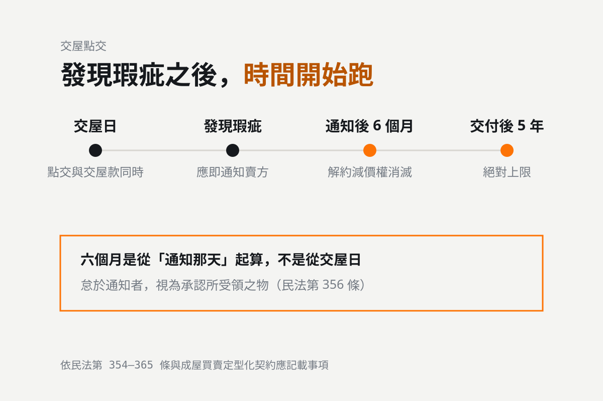

交屋前驗屋要看什麼？點交清單與 6 個月瑕疵期限
點交是成交流程的最後一關，也是最容易出事的一關。鑰匙拿到之後才發現漏水、設備壞了、前屋主戶籍沒遷走，處理難度完全不同。本文對照民法瑕疵擔保規定與成屋買賣定型化契約，說明點交當天該檢查什麼、賣方有哪些法定義務、發現瑕疵要在多久內通知，以及買方可以主張什麼。

點交是整個買賣流程的最後一關，也是最容易出事的一關。鑰匙拿到手之後才發現浴室會漏、熱水器不會動、前屋主的戶籍還留在裡面——同樣的問題，交屋前發現和交屋後發現，處理難度差很多。
關鍵在期限。依民法第 356 條，買方「應按物之性質，依通常程序從速檢查其所受領之物」，發現應由賣方負擔保責任的瑕疵時「應即通知出賣人」；怠於通知者，視為承認所受領之物。白話說：該檢查而沒檢查、該講而沒講，法律上當成你接受了。
交屋這一天，賣方在法律上要做到什麼
成屋買賣定型化契約的應記載事項第十點「交屋」，規定了四件事：
| 項目 | 規定 |
|---|---|
| 交屋時點 | 由雙方約定為尾款交付日、貸款撥付日，或指定的某一日 |
| 搬遷 | 賣方應於約定交屋日前搬遷完畢；交屋時如有未搬離的物件，視同廢棄物處理，清理費用由賣方負擔 |
| 文件交付 | 使用執照（正本或影本）、使用現況的分管協議、規約、大樓管理辦法、停車位使用辦法、使用維護手冊等，若有，應於交屋時一併交付 |
| 戶籍遷離 | 賣方應於交屋前將原設籍於標的的戶籍、公司登記、營利事業登記、營業情形全部遷離；未如期遷離致買方受損害者，負損害賠償責任 |
賣方遲延交屋是有代價的。同一點第二項：因可歸責於賣方的事由未依約定日期交付標的物，買方得請求賣方自應交付日起至依約交付日止，每日按已支付全部價款萬分之二單利計算的金額賠償。
這四件事裡，實務上最常拖的是戶籍。簽約時就把「交屋前遷出」寫進去，交屋當天請賣方出示遷出紀錄，比事後追有效得多。
點交當天的清單
這份清單按照「發現之後處理成本由高到低」排序——最貴的放最前面，因為那是你最該在交屋款付出去之前確認的。
| 類別 | 要確認什麼 |
|---|---|
| 漏水與壁癌 | 浴室與廚房的地坪、外牆與窗框周邊、頂樓住戶的天花板、陽台與室內的交界。看壁面有沒有新粉刷卻未上漆的區塊——那是最常見的遮蓋痕跡 |
| 水 | 每一個水龍頭與馬桶實際放水，看出水量與排水速度；浴缸放滿再排一次；熱水器點火確認 |
| 電 | 每一個開關與插座實際通電測試（帶一個小夜燈或手機充電器最快）；總開關箱的無熔絲開關標示是否清楚 |
| 門窗 | 每一扇門窗開關到底、落鎖；紗窗；鋁窗軌道是否能完全密合 |
| 附屬設備 | 契約裡載明留下的設備逐項通電測試（冷氣、抽油煙機、瓦斯爐、熱水器、照明）。沒有載明的不要假設會留 |
| 鑰匙 | 大門、各房門、信箱、停車場遙控器、門禁卡——數量要與管委會的登記相符 |
| 費用結算 | 管理費、水電瓦斯的最後讀數與繳費收據、停車位費用。地價稅與房屋稅依契約以交屋日為界分算 |
| 車位 | 實際停進去一次。編號與權狀、分管協議是否相符，機械車位要實際升降一次 |
帶一支手電筒、一個插座測試器（五金行百元內）、和一瓶水。這三樣能查出的問題，比肉眼看一圈多很多。
發現瑕疵，期限怎麼算
這是最多人算錯的地方。民法對瑕疵擔保有兩層時間限制：
- 01 通知的時點：依第 356 條，依通常程序檢查後發現瑕疵「應即通知」；不能即知的瑕疵（例如要下雨才會顯現的漏水），日後發現時也是「應即通知」，怠於通知一樣視為承認。
- 02 權利的存續：依第 365 條，買方的解約權或減價請求權，自依第 356 條通知後六個月間不行使，或自物之交付時起經過五年，就消滅。
「六個月」不是從交屋日起算，是從你通知賣方那天起算。而五年是從交付日起算的絕對上限。所以發現瑕疵之後拖著不通知，並不會讓六個月晚一點開始——怠於通知的風險是直接被視為承認。
還有一個例外要記住：如果賣方是故意不告知瑕疵，第 357 條與第 365 條第二項都排除適用——故意隱瞞的，不受六個月限制，買方知道瑕疵也不影響賣方的擔保責任。
可以主張什麼
| 依據 | 買方可以主張 |
|---|---|
| 民法第 359 條 | 解除契約或請求減少價金。但依情形解除契約顯失公平者，買方僅得請求減少價金 |
| 民法第 360 條 | 標的物缺少賣方所保證的品質時，可不解約、不減價，直接請求不履行的損害賠償；賣方故意不告知瑕疵者亦同 |
| 民法第 361 條 | 買方主張有瑕疵時，賣方可定相當期限催告買方表態是否解約；買方在期限內不解約，喪失解除權 |
有一條賣方不能寫進契約的約定。成屋買賣定型化契約的「不得記載事項」第二點：不得約定買賣雙方於交屋後，賣方排除民法上瑕疵擔保責任。看到契約裡有「交屋後概不負責」這類文字，那一條是無效的。
現況交屋不等於什麼都不管
建物現況確認書在滲漏水、海砂屋、輻射屋這幾項，給的是三選一的處理方式：
- 01 賣方修繕後交屋
- 02 以現況交屋，減價
- 03 以現況交屋，買方自行修繕
重點是：這三個選項都建立在「已經揭露」的前提上。賣方勾了「有滲漏水，以現況交屋、買方自行修繕」，那是你知情並同意買下的部分；但沒有揭露的瑕疵，不會因為契約上寫了「現況交屋」四個字就一併免責。
賣方該揭露哪些，整份清單在賣房要告知哪些事？建物現況確認書 19 項。買方在出價前就該拿到這份表，而不是等到點交。
交屋款的位置就是你的籌碼
依成屋買賣定型化契約第四點，價款分成簽約款、備證款、完稅款、交屋款四期，而交屋款是在辦妥所有權移轉登記之後、點交同時支付。
這個順序是刻意的：點交和尾款在同一個時點，你才有實際的談判空間。點交當天發現的問題，在尾款付出去之前談，和付完之後再談，完全是兩件事。
所以我們帶客戶點交時不趕時間。那一兩個小時花下去，省掉的是後面半年的來回。